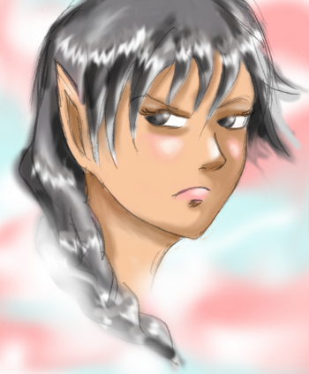
Race: Elfe Argenté
Yeux/Cheveux: argenté
Peau: claire
Signe particulier: Oreilles courtes (pour
un elfe), pointant vers le haut
Le pays d'origine des elfes argentés est Lanoï, une terre fertile, bordée de mer de de forêt.
Ce peuple pacifique est surnommé également "Elfe Marin" à cause de ses nombreuses traditions marines. Les festivals des Elfes Argentés sont célèbres partout sur la planète. Les elfes argentés vivaient autrefois du traditionnel commerce de la pêche et produit de la mer. Leurs magies de prédilection sont la magie de l'eau et de l'air.
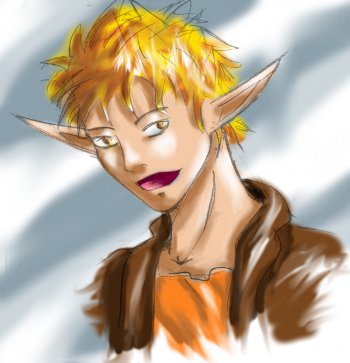
Race: Elfe Sylvestre
Yeux/Cheveux: de blond à brun foncé
Peau: de clair à bronzé
Signe particulier: Oreilles longues
L'elfe Sylvestre, comme son nom l'indique, vit depuis des millénaires dans la forêt de Romatz. Cependant depuis quelques décennies, ils se mêlent aux autres peuples et voyagent de plus en plus. Ils sont en général spécialisés dans la magie de la vie ou la magie de la nature.
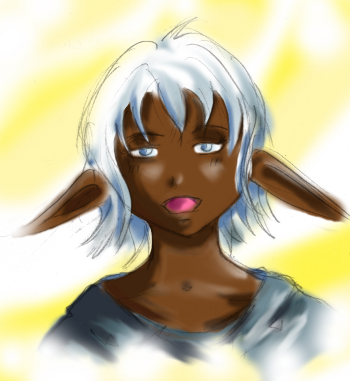
Race: Elfe Noir
Yeux: de vert à bleu
Cheveux: blanc avec des reflets bleu
Peau: de brun foncé à noir
Signe particulier: Longues oreilles tombantes
Leur pays d'origine sont est la terre arides et rocheuse d'Amani. Leur maison sont en générale directement construite à même la roche et de nombreuses galeries souterraines et commerçantes relient les différentes villes. Contrairement aux idées reçue, l'elfe noir ne craint pas la lumière.
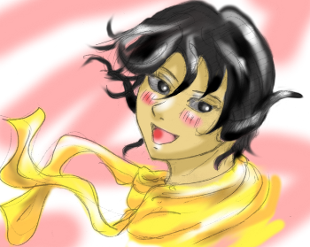
Race: Dragon Noir
Yeux/Cheveux: de gris à noir
Comme tous les dragons, cette races est originaire d'Arcan. Ils sont peu nombreux hors d'Arcan, seule une petite peuplade s'est installée dans le Royaume de Bao Lumina.
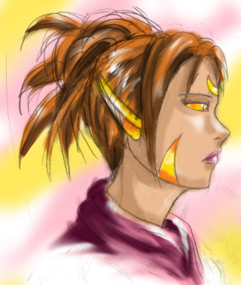
Race: Dragon d'Or
Yeux/Cheveux: de jaune or à brun foncé
Ce sont les premiers dragons a avoir migré vers le Royaume de Nobat. Il existe plusieurs "lignées" avec chacune ses traditions et missions. La lignée la plus connues et puissante est celle des Abémico.
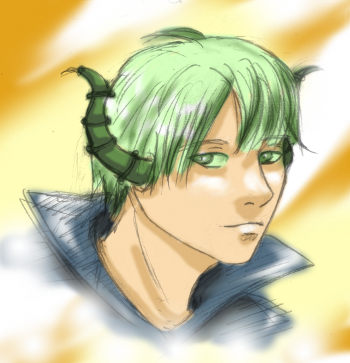
Race: Dragon Émeraude
Yeux/Cheveux: de jaune à vert foncé
Il s'agit de la race de dragon la plus puissantes hors d'Arcan. Nombre d'entre-eux occupe des positions stratégiques dans les différents pays et royaume.
La lignée Bao a même créé un jeune Royaume d’île flottantes artificielles et ont réussis à s'imposer comme les défenseurs officiels des lois et de la justices.
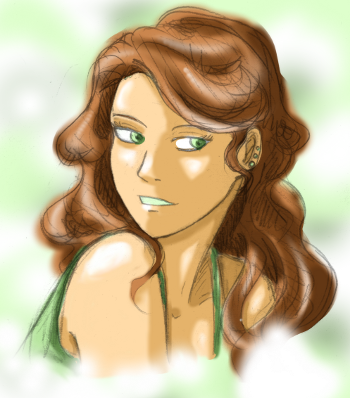
Race: Humain
Les humains peuplent principalement le Royaume central de Nobat. Ce Royaume est régit par le Roi Uliot (elfe noir) et par la Reine Sénaula (humaine).

Race: Gola
Les golas sont une race étrange. Originaire des montagnes d'Arcan, ils possèdent deux pairs de bras et ont un sens de la beauté plus que douteux. Créature extravertie et extravagantes, leur devise pourrait être: plus c'est laid et exubérant, mieux c'est!
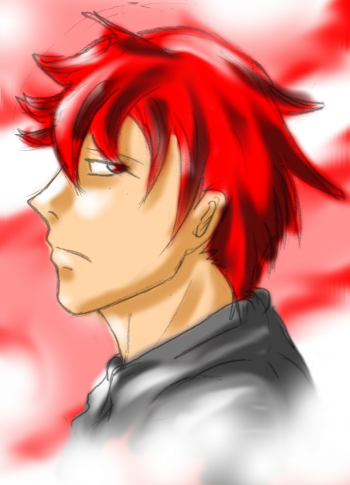
Race: Démon inférieur (Demi-démon)
Caractéristiques: ont hérités d'une minorité (voir d'aucune) caractéristiques démoniaques.
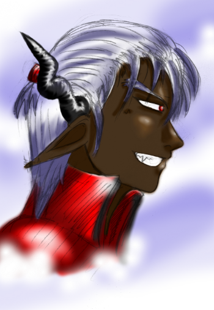
Race: Démon supérieur (Demi-démon)
Caractéristiques: ont hérités d'une majorité de caractéristiques démoniaques.
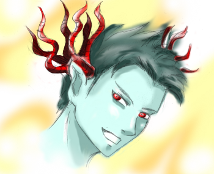
Race: Démon Néo-Toligol
Caractéristiques: démon marin.
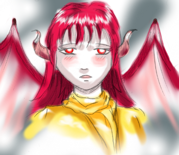
Race: Démon Corne de lune
Caractéristiques: pacifique et inoffensif. A été décimé pour le trafique de ses cornes.